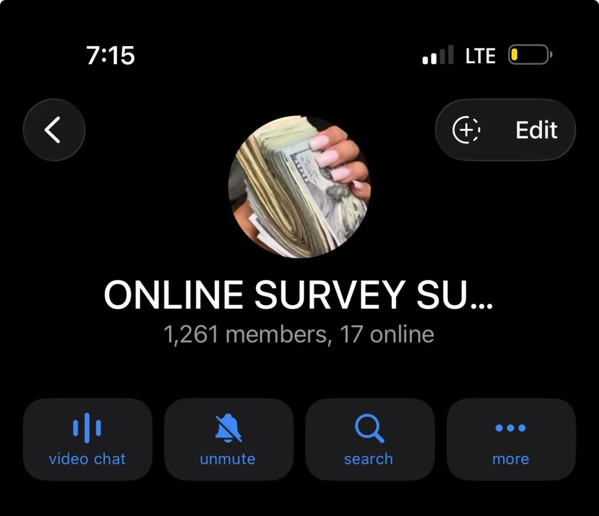

The context
Newcomers to online business and digital learning often need a welcoming place to ask questions and understand their next step. I organized and supported Telegram and WhatsApp groups aimed at sharing practical information and peer guidance.
The approach
My day-to-day involvement included community announcements, onboarding-style explanations, keeping members informed, responding to common questions and helping maintain consistent participation.
I have built and supported active Telegram communities, including a 1,261-member survey group, a 2,175-member learning group and a 2,251-subscriber education channel.

What transfers into a professional team
I bring practical experience in member onboarding, content coordination, moderation and clear, reliable support — skills I am ready to apply in larger teams.